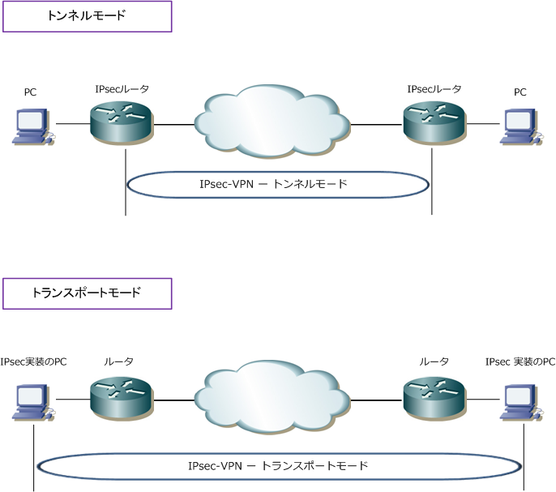
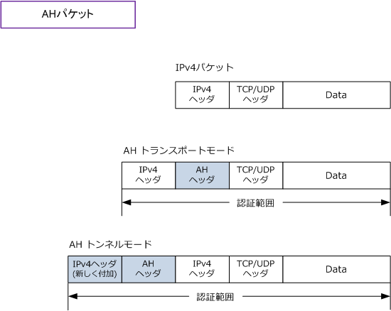
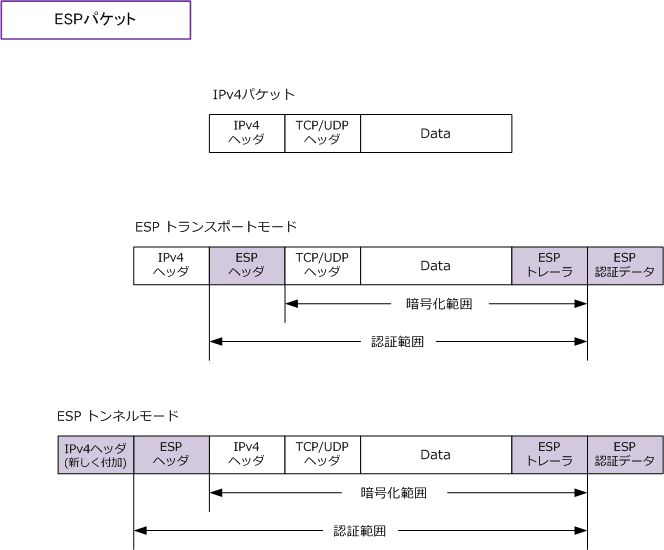
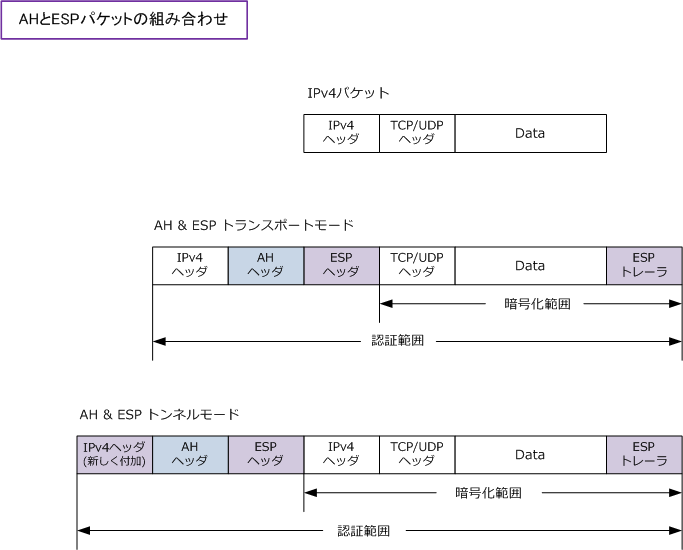

IPsec - Transport mode / Tunnel mode
IPsecの通信モード
IPsecにおける通信モードには、トランスポートモードとトンネルモードの2つのモードがあります。
| モード | 特徴 | NWへの適用例 |
|---|---|---|
| トランスポートモード | ・ パケットのもとのIPヘッダは変更されない。 ・ パケットのLayer4以上のデータ部のみを暗号化する。 ・ 認証の範囲はAHとESPにより異なる。(下図を参照 ) ・ パケットの元のIPヘッダに基づいてパケットが転送される。 |
IPsecが実装された ホスト間でのIPsec-VPN |
| トンネルモード | ・ パケットのもとのIPヘッダは暗号化される。 ・ パケットのLayer4以上のデータ部も暗号化する。 ・ 認証の範囲はAHとESPにより異なる。(下図を参照 ) ・ もとのパケットに新たなIPヘッダが付加される。 ・ 新たに加えられたIPヘッダに基づいてパケットが転送される。 |
IPsecが実装された ルータ間でのIPsec-VPN |

以上の内容から分かるとおり、IPsecによる通信はトンネルモードを利用していることが多いと言えます。 このモードでは、VPNゲートウェイを介してPCはIPsecを全く意識せずにLAN間通信を行うことができます。
トランスポートモードとトンネルモードのAHパケット
トランスポートモードとトンネルモードでのAHカプセル化パケット。IPv4でAHはあまり使用されません。

トランスポートモードとトンネルモードのESPパケット
トランスポートモード及びトンネルモードでのESPカプセル化パケットです。ESPが暗号機能と認証機能を 有することからIPsecにおいて最も主流といえるパケット形式と言えます。

トランスポートモードとトンネルモードAHとESPの組合せパケット
AHとESPを組み合わせたパケット形式です。ヘッダーが多くなりますが、ESPは暗号化機能に専念できるので 「ESP認証データ」 は不要となります。そしてAHがパケット全体を認証します。
